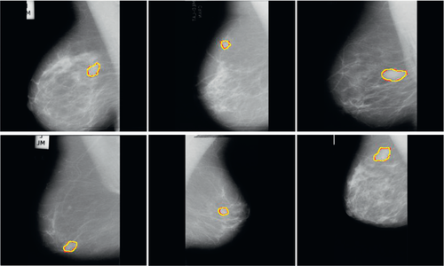
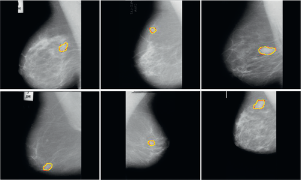
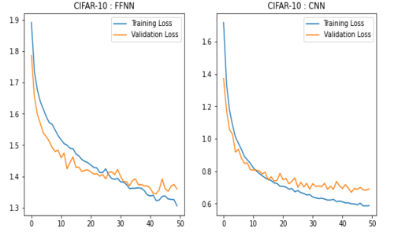
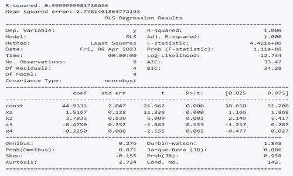
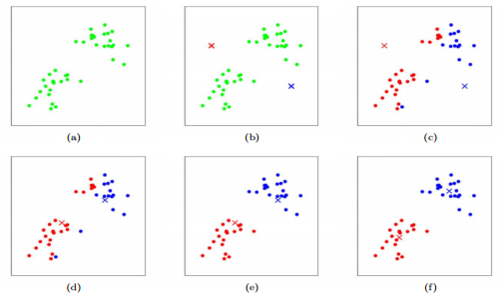

This project describes a new solution for depth estimation in 3D reconstruction using graph convolutional networks (GCN) for a self-supervised monocular depth estimation model. The model consists of two parallel auto-encoder networks and uses a combination of loss functions to cope with bad depth prediction and preserve object discontinuities.
 

This project contains a TensorFlow 2 implementation of a Convolutional Neural Network (CNN) for breast cancer detection. The CNN model is trained on a dataset of breast cancer images and labels, and evaluated on a separate test set to develop an accurate model for early breast cancer detection. The project aims to provide an efficient and effective solution to detect breast cancer at an early stage.

This project contains an implementation of a binary image classification model using convolutional neural networks (CNNs) in PyTorch. The model is trained and evaluated on the CIFAR-10 dataset, with the goal of classifying images. The model is designed as a deep convolutional neural network, consisting of multiple convolutional layers with ReLU activation functions, pooling layers, and fully connected layers.

This project contains Python code for multiple regression analysis, which is a statistical technique used to model the relationship between a dependent variable and two or more independent variables. It includes data preparation, model fitting, and model evaluation. The code can be used for predictive modeling to determine how much of the variation in the dependent variable can be explained by the independent variables.

This project contains a Python implementation of the K-Means clustering algorithm, which is a popular unsupervised learning algorithm used for clustering similar data points together. The K-Means algorithm is widely used in various fields, including data mining, image processing, and pattern recognition. The code includes a set of functions for data preparation, clustering, and evaluation of the clustering results.